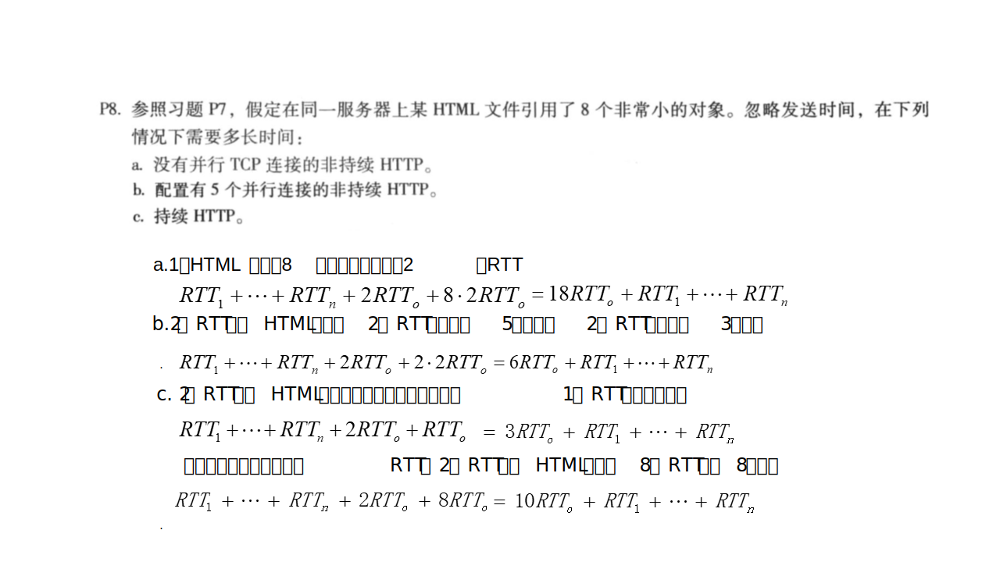
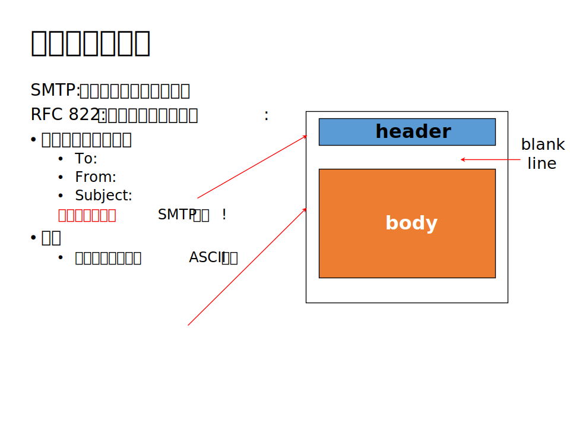
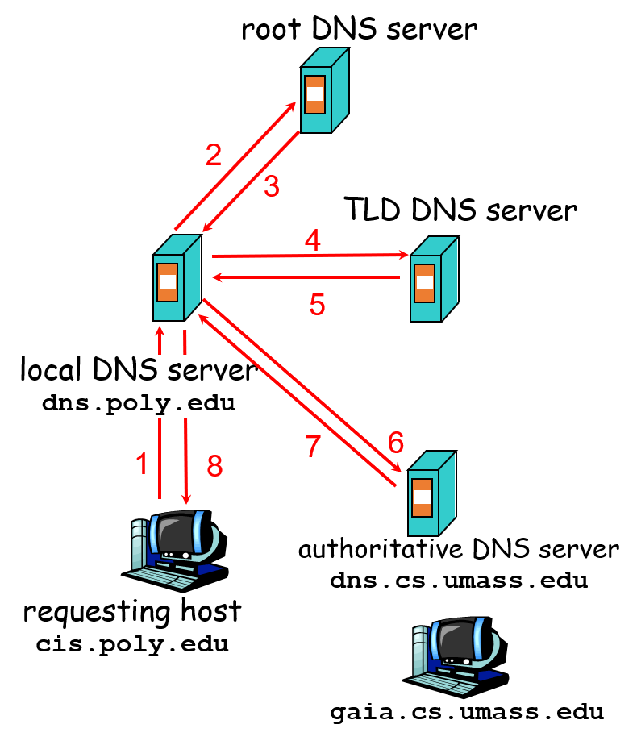

Computer Network Chapter 2
本文最后更新于：June 2, 2022 pm
Chapter 2: Application Layer
Principles of Network Application
Network Application architectures(网络应用程序体系结构)
网络应用程序体系结构可以大致的分为3种结构:
- C/S架构(Client/Server):
- Client(客户端): 同服务器端通信，需要间断的同服务器连接，可以拥有动态IP地址，客户机相互之间不直接通信。
- Server(服务器): 总是打开的主机，具有固定的、众所周知的IP地址，主机群集常被用于创建强大的虚拟服务器。
- P2P架构(Peer to Peer): 没有总是打开的服务器，任意一对主机直接相互通信，对等方向其他对等方提供服务，同时接受其他对等方的服务。具有高扩展性和难以管理的特点。
- C/S与P2P混合架构: 既有服务器也存在不同用户的P2P直接通信。如即时讯息两个聊天用户之间是P2P，上线注册、查询通过服务器。
Process(进程)
进程：运行在端系统中的程序，同一主机上的两个进程通过内部进程通信机制进行通信，不同主机上的进程通过交换报文相互通信。
进程寻址: 每个主机上的进程具有唯一的端口号，因此可以通过端口号来识别交换报文的进程。
| 常见应用程序 | 端口号 |
|---|---|
| Web服务(HTTP) | 80 |
| 邮件服务(SMTP) | 25 |
| 文件传输(FTP) | 21(认证、控制) 20(传输) |
Transport Services Provided by the Internet(Internet提供的传输服务)
Internet为应用程序提供了2个传输层协议: TCP和UDP。
- TCP:
- 面向连接的服务: 在客户机程序和服务器程序之间必须建立连接。
- 可靠的传输服务: 通过TCP进行传输能够保障无差错、按照设当顺序交付所有发送的数据。
- 流量控制: 发送方不会淹没接收方。
- 拥塞控制: 当网络出现拥塞时会抑制发送。
- UDP: 无需连接，尽力发送数据，但不保证接收到数据。也无流量控制和拥塞控制。
The Web and HTTP(Web应用和HTTP协议)
网页（Web页，或称文档）由许多对象组成。 对象就是文件，可以是HTML文件, JPEG图像, Java applet, 音频文件等。每个对象被一个URL(统一资源定位符)寻址，因此在获取时一次请求只能获取一个对象。
HTTP: hypertext transfer protocol(超文本传输协议)，目前有两种协议：HTTP1.0和HTTP1.1。
HTTP共有2种报文: 请求报文和响应报文。
- 请求报文
请求报文的第一行为请求行，请求行与请求体之间为可变长的首部行和一个空行。首部行为key:value格式并通过cr+lf进行分隔。请求体内则为表单或其他需要上传的数据。
请求行内容包括请求方法、请求资源路径(URL)、HTTP版本号: 路径和版本号由请求方情况确定，这里只介绍需要掌握的不同请求方法之间的区别:- HTTP/1.0
- GET: 请求体为空，服务器的响应报文会包含请求对象(正常响应)或错误状态码。
- POST: 一般会将表单等需要上传数据放在请求体中，服务器会做出响应回复响应报文。
- HEAD: 服务器收到请求时，用HTTP报文进行响应，但不返回请求对象
- HTTP/1.1
- GET: 与HTTP/1.0相同
- POST: 与HTTP/1.0相同
- HEAD: 与HTTP/1.0相同
- PUT: 文件在实体主体中被上载到URL字段指定的路径
- DELETE: 删除URL字段指定的文件
- HTTP/1.0
- 响应报文

响应报文与请求报文几乎相同，唯一的区别只在于第一行，请求报文第一行为请求行，响应报文第一行为状态行。
状态行内容包括版本、状态编码和对状态编码的简单解释短语。常见的状态编码含义可以在这里查询: 状态码查询
None-Persistent Connection(非持久连接)
一次TCP连接只能传输一个对象，如果要传输多个对象，需要创建多个TCP连接。
RTT(往返时间): 1个小分组从客户主机到服务器再到客户主机所花费的时间(来回需要的传播时间)。
一次HTTP请求和回复的过程: TCP三次握手，但在第三次握手的同时，客户主机就可以发送一个HTTP请求报文，服务器在收到请求报文后，会返回一个HTTP响应报文，TCP连接断开，如果需要请求其他对象则需要重新建立连接。
Persistent Connection(持久连接)
服务器发送响应消息后保持连接而不会结束TCP连接，同客户/服务器的后续HTTP消息继续在该连接上传送。
在使用同一条连接的方式上有使用流水线方法和不使用流水线方法两种。
- 不使用流水线的持久HTTP连接: 不使用流水线当有多个请求需要发送时，仍然是要先建立连接，等待服务器响应，在响应完成后通过已经建立好的连接重新发送请求。
- 使用流水线的持久HTTP连接: 而使用流水线的方式时，如果有多个请求需要发送，无需等待第一个请求响应到达才能发送下一请求，而是直接同时发送所有需要的请求，然后等待服务器的响应。

Tip: 为DNS请求时间
Cookie
HTTP协议是一种无状态协议，是没有维护客户先前的状态信息的，但在Web应用中经常会需要得知用户前段时间的状态Cookie便是一种跟踪用户的技术。
Cookie的实现实际非常简单，当用户第一次发送请求时，服务器会生成一个Cookie并保存到数据库中，在响应报文中附加上Cookie，当下次用户发送请求时，需要将Cookie附加在请求报文内，这样服务器就能够获取到用户的信息了。因此Cookie追踪的是主机而不能追踪特定的人。
Web缓存
Web缓存为一个代理服务器，在一个局域网下或者一个机构内网中有专门的服务器来处理当前子网下的所有HTTP请求。使用Web缓存需要配置浏览器或者其他发起HTTP请求工具，将HTTP请求重定向到Web缓存服务器。
Web缓存的工作原理: 当客户需要对象时，向Web缓存发出请求报文，
- 请求对象在Web缓存中存在且为最新版本: 由Web缓存直接返回对象。
- 请求对象在Web缓存存在但不是最新版本: 由Web缓存进行代请求，得到响应后返回对象。
- 请求对象不在Web缓存中: 由Web缓存进行代请求，得到响应后返回对象。
说明: 判断Web缓存中对象是否为最新版本采用条件GET方法，即在请求报文首部行中增加If-modified-since: <date>，如果没有修改则返回304响应码，如果有修改则返回最新对象。Web缓存会定期进行条件GET操作。特别的: 一般响应报文中的Data:属性并非是最后修改时间，而是响应报文的生成时间。
命中率: 请求对象在Web缓存中能直接返回的概率。
Web缓存的优点: 减少对客户机请求的响应时间、减少内部网络与接入链路上的通信量、能从整体上大大降低因特网上的Web流量。
File Transfer Protocol(文件传输协议)
FTP协议的主要场景为传输文件到远程主机或从远程主机下载文件。
FTP过程:
- FTP客户首先发起建立1个与FTP服务器端口号21之间的TCP控制连接, 指定TCP作为传输层协议。
- 客户在建立的控制连接上获得身份认证。
- 客户在建立的控制连接上发送命令来浏览远程主机的目录。
- 当服务器接收到1个文件传输命令时, 在服务器端口号20创建1个与客户的TCP数据连接。
- 1个文件传输后,服务器结束这个TCP数据连接。这个TCP连接指端口20的那个传输文件TCP连接。
Electronic mail(电子邮件)
电子邮件在Internet中的传输可以分为3个主要组成部分:
- Mail Server: 实现邮件的存储和收发功能的服务器。
- SMTP: 邮件服务器之间的传输协议。
- User Agent: 用户代理，用于用户从邮件服务器查看邮件。
Simple Mail Transfer Protocol(简单邮件传输协议)

SMTP协议的传输过程:
- 握手
- 邮件消息的传输
- 结束
SMTP的总结:
- SMTP使用TCP作为传输层协议，并且使用持久连接。
- SMTP 要求邮件消息(header & body)必须是7-bit ASCII
- SMTP服务器使用CRLF.CRLF 来判断邮件消息的结束。
SMTP与HTTP的区别:
| HTTP | SMTP |
|---|---|
| 拉协议 | 推协议 |
| 对象在响应报文体中存放且每个报文只有一个对象 | 邮件内的多个对象在同一邮件的多目部分发送 |
| 命令、状态码、为ASCII码 | 邮件消息均为7-bit ASCII码 |
Post Office Protocol(邮局协议) and Internet Message Access Protocol(因特网邮件访问协议)
POP3和IMAP都是用户代理与邮件服务器之间的协议，用于验证用户身份、读取邮件、管理邮件和编辑并发送邮件。大致可以分为身份认证阶段和传输阶段，实际上十分的复杂并且两者之间也有很多不同的规则。但是需要知道的是POP3和IMAP是用户通过用户代理来访问邮件服务器的协议，而不是邮件服务器之间的邮件传输协议即可。
Domain Name System(域名系统)
通过DNS可以实现:
- 主机名与IP地址的映射。
- 主机名与别名的映射。
- 域名与该域权威名字服务器的主机名的映射。
- 邮件服务器主机别名与邮件服务器主机名的映射。
其中第三和第四稍微有点绕，后面将展示如何通过DNS进行域名的访问和邮件服务器的访问。
DNS RR(DNS资源记录)
从上面DNS实现的功能可以看出至少需要能够表示4种不同的映射关系，在这里RR是通过其中的type字段来表示不同的映射关系。
type:
- A: name = 主机名, value = IP地址
- CNAME: name = 别名, value = 主机名
- MX: name = 邮件服务器主机别名, value = 邮件服务器主机名
- NS: name = 域名, value = 域名服务器主机名
当已知主机名时，只需要查询type为A的记录即可得到该主机的IP地址。
当已知主机别名时，需要先查询type为CNAME的记录获取主机名，再查询type为A的记录才能得到该主机的IP地址。
当已知邮件服务器主机别名时，需要先查询type为MX的记录获取邮件服务器主机名，再通过查询type为A的记录才能得到该邮件服务器的IP地址。
当已知域名时，需要先查询type为NS的记录获取域名服务器主机名，再通过查询type为A的记录才能得到该域名服务器的IP地址。
DNS Protocol(DNS协议)
DNS协议 : 查询报文与应答报文 , 但具有同样的报文格式
- 标识符: 16位，查询和应答报文使用相同的标识符
- 标志:有若干个标志构成，分别标识不同的功能
- 查询/应答－0/ 1
- 查询希望是/非递归查询－1/0
- 应答可/否获得(支持)递归查询－1/0
- 应答是/否来自权威名字服务器－1/ 0
- 问题部分: 查询的name和type
- 回答部分: 对于查询,应答的资源记录。可以多个资源记录，因为可以有多个IP地址
- 权威部分: 权威名字服务器的其他资源记录
- 附加信息部分: 其他有帮助的记录
DNS Architectures（DNS层次结构）
- 根名字服务器: 负责记录顶级域名服务器的信息。
- 顶级域服务器:负责顶级域名 com, org, net, edu, etc等, 和所有国家的顶级域名 uk, fr, ca, jp等。
- 权威DNS服务器: 在因特网上具有公共可访问主机（如Web服务器和邮件服务器）的每个组织机构必须提供公共可访问的DNS记录，这些记录将这些主机的名字映射为IP地址。组织机构的权威DNS服务器负责保存这些DNS记录。
还有不属于层次结构的DNS服务器: 本地DNS服务器。每个ISP（如居民区ISP、公司、大学）都有一个本地DNS，也叫默认服务器。当主机发出DNS请求时，该请求被发往本地DNS服务器。起着代理的作用，转发请求到层次结构中。
DNS Query(DNS查询)
- 递归查询: 名字解析的负担交给被查询的名字服务器。
- 迭代查询: 被查询的名字服务器 回复可以被查询的名字服务器的IP地址，然后重新去回复的名字服务器查询。

Review

本博客所有文章除特别声明外，均采用 CC BY-SA 4.0 协议 ，转载请注明出处！